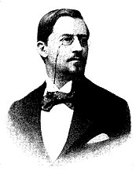
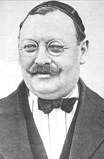

Fútbol Club Barcelona, juga dikenal sebagai
Barcelona atau Barça, adalah klub sepak bola profesional yang berbasis di Barcelona, Catalunya,
Spanyol, yang ikut serta di kompetisi tertinggi sepak bola Spanyol, La Liga.
Didirikan pada tahun 1899 oleh sekelompok pemain Swiss, Inggris, Jerman dan Katalan yang dipimpin
oleh Joan Gamper, klub telah menjadi simbol budaya Catalan dan Catalanisme, yang mempunyai motto
"Més que un club" (Lebih dari sebuah klub). Tidak seperti banyak klub sepak bola lainnya, para
pendukung memiliki dan mengoperasikan Barcelona. Ia adalah klub sepak bola kedua terkaya di dunia
dalam hal pendapatan, dengan omzet tahunan sebesar €560,8 juta dan kedua yang paling berharga,
senilai $3,56 miliar. Lagu kebangsaan resmi Barcelona adalah "Cant del Barça", yang ditulis
oleh Jaume Picas dan Josep Maria Espinas. Secara tradisional, Barcelona mengenakan kostum merah
dan biru, sehingga klub ini dijuluki Blaugrana.
History
Periode awal

Wild Walter, presiden pertama FC Barcelona
Pada tahun 1898, Hans Gamper, yang kemudian dikenal sebagai Joan Gamper, tiba di Barcelona untuk
alasan profesional. Dia bermain sepak bola bersama rekan-rekannya di lapangan di Bonanova, yang
kemudian menjadi markas pertama Barcelona, pada waktu senggangnya.
Pada 22 Oktober 1899, Gamper memasang sebuah iklan di majalah Los Deportes untuk menemukan para
pemain yang tertarik untuk membentuk sebuah tim sepak bola. Hasilnya, pada 29 November, Gamper
dan sebelas pemain lainnya (Otto Kunzle dan Walter Wild dari Swiss; John Parsons dan William
Parsons dari Inggris; Otto Maier dari Jerman; Lluís d’Ossó, Bartomeu Terradas, Enric Ducal, Pere
Cabot, Carles Pujol dan Josep Llobet dari Katalan) berkumpul di Solé Gymnasium untuk mendirikan
Futbol Club Barcelona. Walter Wild kemudian ditunjuk sebagai presiden pertama klub.
FC Barcelona memiliki awal yang sukses di kompetisi regional maupun nasional, dengan
berpartisipasi di Campionat de Catalunya dan Copa del Rey. Pada tahun 1902, Barcelona
memenangkan piala pertamanya dengan menjuarai Copa Macaya dan juga berpartisipasi di Copa del
Rey pertama, namun kemudian kalah 1–2 dari Bizcaya di babak final. Pada tahun 1908, Joan Gamper
menjadi presiden klub karena tergerak untuk menyelamatkan Barcelona dari krisis yang dialami
klub pada saat itu sejak gagal memenangkan kompetisi apapun setelah menang Campionat de
Catalunya pada tahun 1905. Gamper membangun kembali klub, sehingga pada musim 1908–1909
Barcelona kembali menjadi juara Campionat de Catalunya dengan rekor tanpa kekalahan di sepanjang
kompetisi.
Perjuangan melawan sejarah

Joan Gamper, salah satu pendiri FC Barcelona
Pada 14 Juni 1925, para penonton di stadion mengolok-olok lagu kebangsaan Spanyol sebelum
pertandingan melawan Júpiter yang merupakan pertandingan penghormatan kepada paduan suara Orfeó
Català. Akibatnya, pada 10 Juli, Primo de Rivera memaksa Gamper mundur sebagai presiden dan
aktivitas klub ditutup selama enam bulan.
FC Barcelona merayakan ulang tahun ke-25 pada 7 dan 8 Desember 1924 dengan mengadakan dua
pertandingan melawan Real Unión de Irun di stadion Les Corts. Pada saat itu, Barcelona sudah
beranggotakan 12.207 orang.
Pada tahun 1928, Barcelona meraih gelar Copa del Rey setelah mengalahkan Real Sociedad dengan
skor 3–1 pada laga final yang diselenggarakan di Santander. Plattkó, yang menjadi kiper pada
pertandingan itu, mengalami cedera serius setelah menunjukkan performa heroik di sepanjang
pertandingan. Seorang sastrawan Spanyol, Rafael Alberti, kemudian mengenang Plattkó pada sebuah
puisi berjudul “Oda a Platko”.
Barcelona menjadi juara liga Spanyol pertama yang diselenggarakan mulai 12 Februari 1929 selama
empat setengah bulan, dengan raihan 25 poin. Manuel Parera menjadi pencetak gol terbanyak
pertama di liga Spanyol. Namun, para pendukung tidak terlalu merayakan gelar ini karena belum
dianggap sebagai kompetisi penting.
Joan Gamper bunuh diri pada 30 Juli 1930, diduga akibat kemunduran bisnis yang dialaminya dan
paksaan mundur dari klub.
Jersey
FC Barcelona memamerkan seragam yang inovatif, namun sederhana dan elegan untuk musim 2022/23,
terinspirasi
oleh Olimpiade Barcelona di tahun saat kota itu merayakan ulang tahun ke-30. Jersey baru
mengingatkan kembali pada peristiwa penting dan dipresentasikan hari ini,
Jumat
3 Juni, dengan tagline “The Flame Lives On”. Desainnya membangkitkan semangat periode itu
regenerasi dan redefinisi, saat Barcelona terbuka untuk dunia dan dunia terbuka
ke Barcelona.